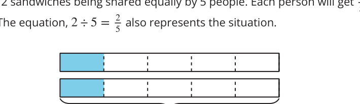

We learned that there is a relationship between division and fractions.
We can see this relationship in diagrams, situations, and equations.
This diagram represents 2 sandwiches being shared equally by 5 people.
Each person will get \(\frac{2}{5}\) of a sandwich.
The equation, \(2 \div 5 = \frac{2}{5}\) also represents the situation.
